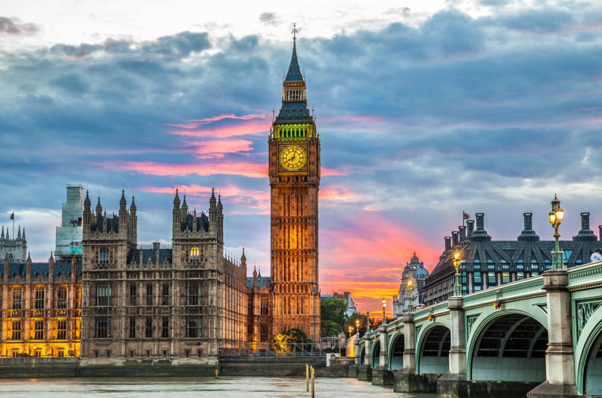
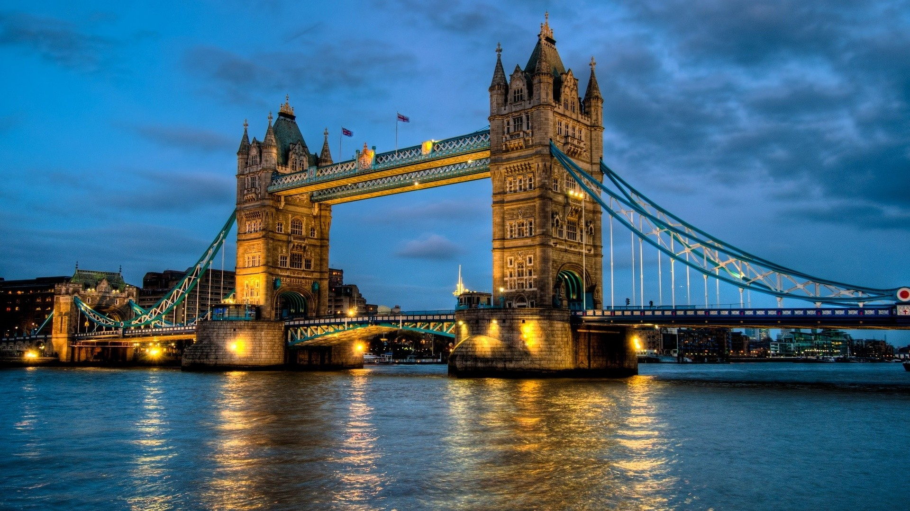

London

At my second destination: London, the three specific places that I want to make sure to visit are...
1. Big Ben- The Big Ben is actually the nickname for the Great Bell of the famous clock of the Palace of Westminster in London, but it also sometimes refers to the whole clock and the clock tower altogether. The tower is actually known as the Elizabeth Tower! Anyways, I would love to visit the Big Ben, or the Elizabeth Tower, because it's the British cultural icon and I really want to see it in real life and take pictures with it.

2. London's Bridge- In the pictures of the London's Bridge, the structure looks so complex and beautiful, especially at night. I really want to just visit this place at night and be amazed by all the lights and reflections in the water. And take some nice photography while I'm at it!

3. Shakespeare's Globe- Although this place isn't the real, original "Globe Theatre" from the 1500s, this building was built with a similar structure, and its purpose is to seek further the experience and understanding of Shakespeare in performance. I'm not a fan of Shakespeare, but I think it'd be awesome to visit this modern playhouse.